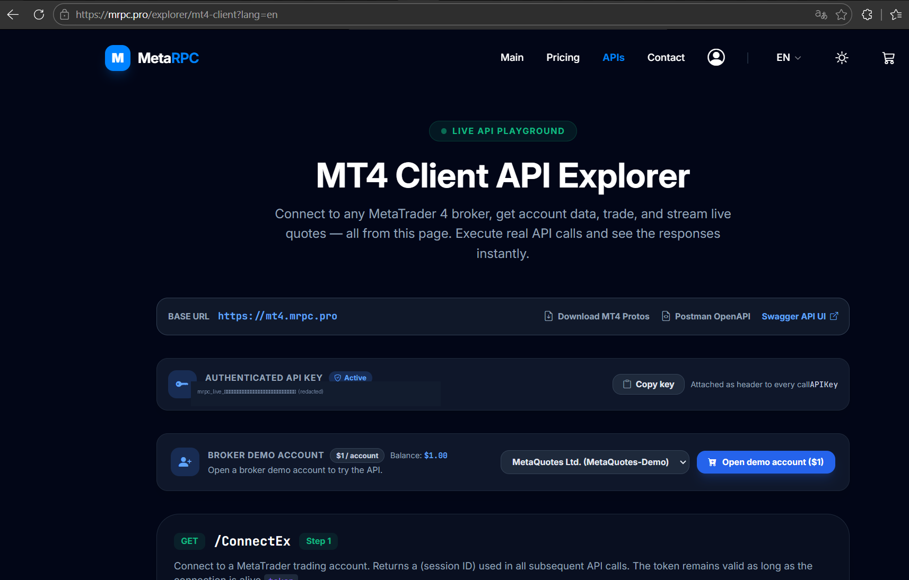

MT4 for Beginners¶
New to MetaTrader 4? This is the 5-minute mental model you need before the code makes sense.
What MT4 is¶
MetaTrader 4 (MT4) is a trading platform. Your account lives on a broker's server (e.g. EGlobal-Demo). Through it you trade symbols (instruments like EURUSD or XAUUSD).
This SDK talks to your MT4 terminal over the network (gRPC to mt4.mrpc.pro:443) so you can automate everything from Ruby.
Always learn on a demo account. It trades with fake money on real prices — no risk.
Getting a demo account & API key¶
Registration and your API key are free. Sign up at mrpc.pro/signup and your key is provisioned automatically — nothing to generate; in the web Explorer it's even attached to every call for you. What costs money is paid usage of the service (for example the instant $1 demo below).
To run the SDK you also need an MT4 demo account (login / password / server). You can get one two ways:
⚡ Fastest — one click on mrpc.pro ($1)¶
Our MT4 Client API Explorer (a live API playground) spins up a demo account instantly — no terminal install:
- Open the MT4 Client API Explorer (sign in first). Your API key is already shown at the top (Active · Copy key).
- Click Open demo account ($1). The $1 is charged to your MetaRPC balance (the account that holds your API key) — not to a broker.
- The demo is created instantly with a ready login / password / server — you can even run real API calls right on that page (the key is attached automatically).

Copy the demo login / password / server, then jump to Getting Started to connect from Ruby.
🖥️ Free — create a demo in the MetaTrader 4 terminal¶
The no-cost route: create a demo account directly in the MT4 terminal (free), and connect with your free API key — or with the literal value "TRIAL" for a quick first look.
1 · Download & install MT4. Get the terminal from metatrader4.com/download and install it.
2 · Find the Navigator panel. It's on the left, below Market Watch. Its Accounts section is where you add accounts.

3 · Open a new account. Right-click Accounts → Open an account to bring up the broker-server search.
4 · Pick a demo server. Find your broker's demo server (search if needed) and click Next.

5 · Choose "Open a new demo account" and click Next.

6 · Fill in the form (name, email; virtual deposit e.g. $10,000, leverage 1:100, currency USD), accept the terms, Next.

7 · Save your credentials. MT4 shows your login, password (master) and server. Copy them now — the SDK needs exactly these three values.

Two passwords are shown: the master password trades; the investor password is read-only. Use the master password with the SDK.
The money words¶
| Term | In one line |
|---|---|
| Balance | Your settled money (no open trades counted). |
| Equity | Balance plus the profit/loss of trades you have open right now. |
| Margin | Money "reserved" while a trade is open. |
| Free margin | What's left to open new trades. |
When you open a trade, equity moves tick by tick. When you close it, the result folds into balance.
Buying and selling¶
- Buy (go long) — you profit if the price rises.
- Sell (go short) — you profit if the price falls.
You trade in lots (volume). 0.01 is a micro lot — the smallest typical size, perfect for learning.
Two ways to enter:
- Market order — fill now at the current price.
- Pending order — wait for a price. A LIMIT waits for a better price; a STOP waits for a breakout.
Protecting a trade¶
- Stop-Loss (SL) — auto-close if the price goes against you by so much. Caps the loss.
- Take-Profit (TP) — auto-close once you've made your target.
Set them as prices — compute the distances from pips (pip = point × 10 on a 5-digit symbol):
pip = mt4.symbol_point("EURUSD") * 10
digits = mt4.symbol_digits("EURUSD")
q = mt4.price("EURUSD")
# 20-pip stop, 40-pip target
mt4.buy_market_with_sl_tp("EURUSD", 0.01,
sl: (q.bid - 20 * pip).round(digits),
tp: (q.ask + 40 * pip).round(digits))
See Risk Management for sizing a trade to a fixed risk.
MT4's model: orders are positions¶
This is the one thing to remember — and it's where MT4 differs from MT5:
- An order is the instruction to trade.
- On MT4, a filled market order IS the open trade (the "position"). There is no separate position object, and no "deals".
- Each order has a ticket — the number you use to modify or close it.
So "close the position" means close the order by its ticket. There is also no trade retcode: a filled buy_market returns OrderSendData with a ticket > 0; a rejection raises an error.
Your first 10 lines¶
require "metarpc_mt4"
mt4 = MetaRPC::MT4::MT4Sugar.create("mt4.mrpc.pro", 443, api_key: ENV["MRPC_API_KEY"])
mt4.quick_connect(login, "password", "EGlobal-Demo")
puts "balance #{mt4.balance.round(2)}"
r = mt4.buy_market("EURUSD", 0.01) # tiny demo trade
mt4.close_order(r.ticket) # r.ticket is the order (= position) ticket
Next steps¶
- Getting Started — install and connect properly.
- Your First Project — build something small.
- Glossary — every term, defined.
- MT4Sugar — the friendliest API.